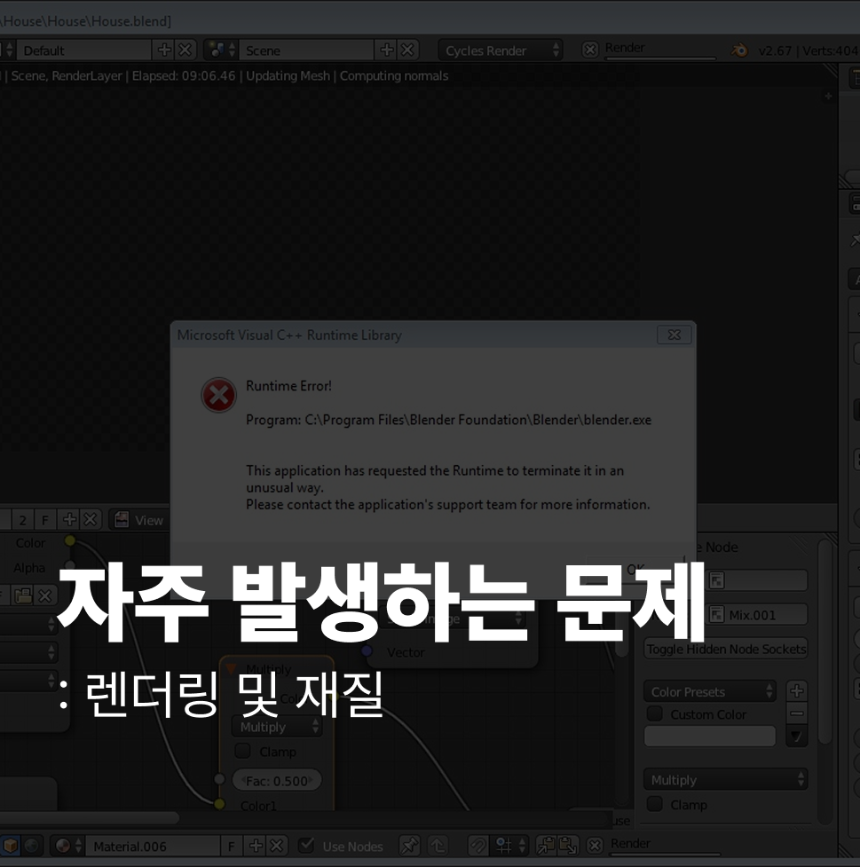

1 카메라 및 조명 미설정
장면(씬)에 카메라를 설치하지 않은 채 렌더링을 시도하거나, 조명을 전혀 배치하지 않아 최종 이미지가 새까맣게 나오거나 의도한 대로 보이지 않는 경우입니다.
2 노이즈 처리 및 샘플링 부족
Cycles 렌더 엔진 사용 시 충분한 샘플링 횟수를 설정하지 않거나 디노이저(Denoiser) 기능을 활성화하지 않아 최종 이미지에 자글자글한 노이즈(Grain)가 많이 남아 품질이 저하되는 경우입니다.
3 셰이더(재질) 기본값 사용
PBR(물리 기반 렌더링)의 개념을 이해하지 못한 채 기본 'Principle BSDF' 셰이더만 사용하여 Specular와 Roughness 같은 핵심 값을 조정하지 않아 모든 재질이 획일적인 플라스틱처럼 보이는 경우입니다.
4 렌더링 엔진 오해
Eevee 엔진이 실시간 렌더링이라는 장점만 보고 복잡한 광원 효과, 굴절, 반사 등을 Eevee에서만 구현하려고 시도하다가 원하는 수준의 품질을 얻지 못하는 경우입니다.
5 저장되지 않은 작업물 잃어버리기
블렌더가 불안정하게 종료되거나 정전 등의 문제 발생 시 작업물을 저장하지 않아 **복구(Recover)** 기능을 사용할 수 없는 상황입니다 (가장 흔하고 치명적인 실수 중 하나입니다).